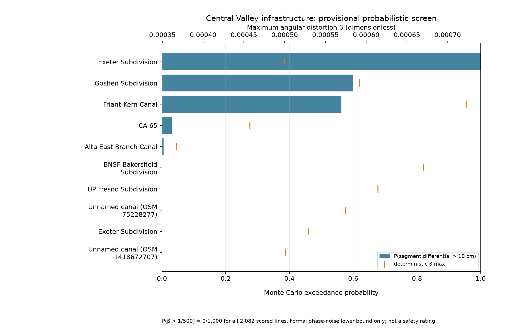

Slide 4 / 6 · 3 · Why You Can Trust It (1:30–2:05) · Ground Truth & Uncertainty
Proof on the ground and uncertainty
Provisional NISAR motion tracks 10 Central Valley GPS stations (r = 0.924), beats 0.3 cm noise, and includes a Mexico City pattern check.
Independent Validation & Noise Floor
- Primary validation (GNSS): r = 0.924 across 10 continuous Central Valley GPS stations (
1.00 cmmedian RMSE,1.37 cmfinal-epoch RMSE). - Formal noise & negative control: Median formal phase noise ≈ 0.3 cm (
0.294 cm); London Clay negative control isbelow_detection(3σ = 3.62 cm, 97.7% within ±1.5 cm). - Secondary OPERA check (seasonal caveat): Over Mexico City the spatial pattern matches NASA JPL's OPERA product at 10 points (
r = 0.912), although OPERA covers winter (2025-12-25 to 2026-03-25) and NISAR summer (2026-06-22 to 2026-10-20); in the Central Valley and at Eloy agreement is weak (r = 0.40and0.09) because seasons and viewing geometry differ.

Source:
data/central_valley/validation.json, data/global/opera_check.json, data/uk_clay/detection.json.
Slide 4 / 6
Slide 5 / 6 · 4 · What It Is For (2:05–2:40) · People, Water, Infrastructure, Simulator
From a radar measurement to a decision
We turn sinking into 1.20 M exposed people, 0.3174 km³/yr lost storage, 81/645 tilting corridors, 29 bulletins, and a 30-second simulator.

−16.8 ± 2.2 cm/yr permanent vs 11.7 cm seasonal; 0.3174 km³/yr CV storage lost, mixed).
81 / 645 segments > 20 mm/km (Tulare Canal 57.01 mm/km; provisional).Exposure & Tools: 1,200,716 residents on 511.65 km² sinking > 5 cm (GHSL 2025, 29 basins) · 29 one-page NASA-style basin bulletins · Valley Under Pressure 24-month simulator (web/game/).
Source:
data/global/exposure_atlas.json, data/central_valley_fullyear/storage_loss.json, data/central_valley/assets.json.
Slide 5 / 6
Slide 6 / 6 · 5 · What Is New & Open (2:40–3:00) · Reproducibility & Transparency
Open engine and four original contributions
We built a comparable 29-basin atlas, self-checking QC ranking, decision-ready storage and tilt metrics, and an open one-command pipeline on public NASA data.
Four Original Contributions & Open Code
- 1. Comparable 29-basin atlas: One pipeline, one 93-day window, off-basin references.
- 2. Self-checking QC: Automated 12.1 cm phase-cycle & spike flagging.
- 3. Decision metrics: GHSL exposure,
0.3174 km³/yraquifer loss, corridor tilt, 29 bulletins, simulator. - 4. One-command reproduction:
python -m pipeline.nisarpulse run ...&python pipeline/pc10/build_atlas.py. - AI & Imagery Disclosure: Zero AI-generated images anywhere; Claude/Gemini assisted code & QA. Live site: keremsumer2010-tech.github.io/aseltech/.

web/game/), calibrated to USGS Terra Bella compaction and NISAR rates.
Team Aseltech · ASELSAN MTAL, Ankara · NASA Space Apps Challenge 2026 (Lincoln, UK)
Slide 6 / 6